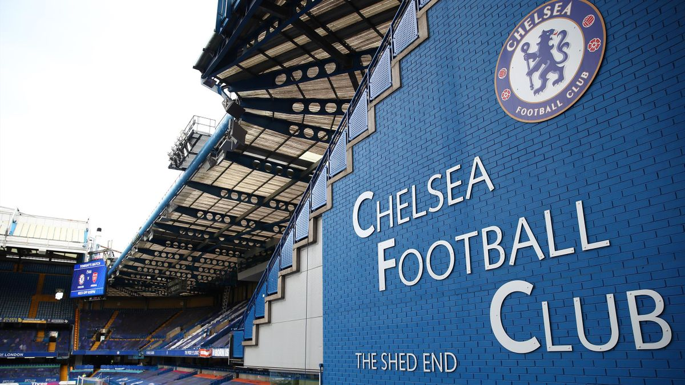

The Shed End is along the south side of the pitch. In 1930, a new terrace was built on the south side, for more standing spectators. It was originally known as the Fulham Road End, but supporters nicknamed it 'The Shed' and this led the club to officially change its name.